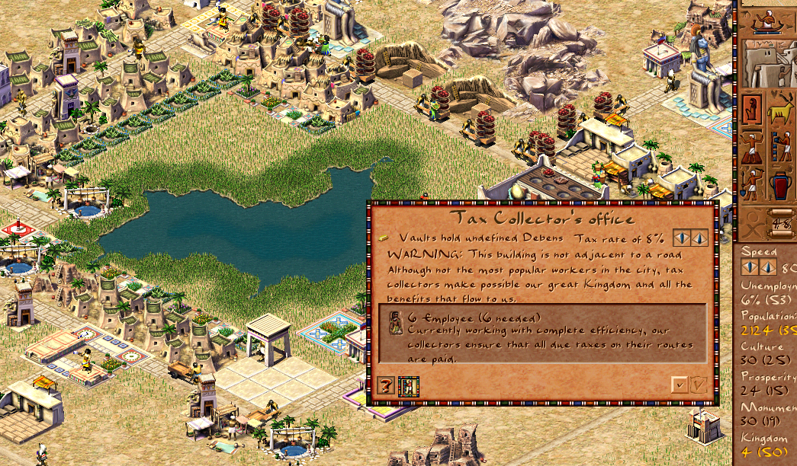

Tax Collector Window: Script-Driven UI

The Tax Collector's info window is now fully script-driven, continuing our migration of UI code from C++ to JavaScript. This change allows modders to customize the window's behavior and appearance without recompiling the engine.
What Changed
Previously, the Tax Collector window was hardcoded in C++ (window_tax_collector.cpp). Now it's defined entirely in JavaScript (ui_tax_collector_window.js), making it easy to modify:
- Window layout and text can be changed by editing JS files
- Tax rate adjustments trigger
event_finance_change_taxevents - Window automatically shows related buildings and opens the Financial Advisor
- Hot-reloading support — changes apply without restarting the game
Technical Details
The window is registered from JavaScript with the following configuration:
- related_buildings — shows other tax-related structures
- first_advisor: FINANCIAL — opens Financial Advisor on click
- Dynamic text — money, warnings, and worker status update in real-time
- Tax rate controls — arrow buttons emit finance events for tax changes
Code Reduction
This refactoring removed 86 lines of C++ code and duplicate layout definitions from ui_widgets.js, replacing them with 55 lines of clean, modular JavaScript. The result is more maintainable and easier to extend.
Why This Matters
Moving UI to JavaScript is part of our broader goal to make Akhenaten fully moddable. With script-driven windows, modders can:
- Create custom building info windows
- Add new UI elements and interactions
- Modify game mechanics without touching C++ code
- Test changes instantly with hot-reloading
More buildings will follow this pattern in upcoming updates. Stay tuned!